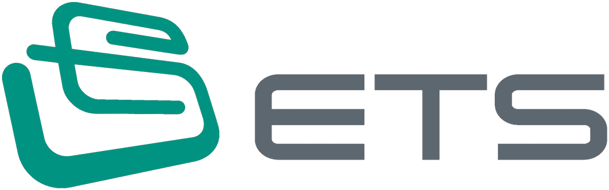

| No | 등급 | 회사 | 사실(신호) | 영업이 할 일 | 출처 |
|---|---|---|---|---|---|
| 1 | A 즉시 | LG에너지솔루션 | LG에너지솔루션 입찰·발주 신호 | 장비 사양·일정 확인, 견적 준비 | 디지털데일리 ★★★★★ 원문 ↗ |
| 2 | A 즉시 | LG에너지솔루션 | LG에너지솔루션 신·증설 투자 | 라인 구성·장비 발주(RFQ) 시점 확인 | batterynews.co.kr ★★★★★ 원문 ↗ |
| 3 | A 즉시 | 삼성SDI | 삼성SDI 신·증설 투자 | 라인 구성·장비 발주(RFQ) 시점 확인 | 뉴스퀘스트 ★★★★★ 원문 ↗ |
| 4 | B | 삼성SDI | 삼성SDI ESS 물량 확대 | ESS 셀 라인 증설 여부·주액/조립 장비 수요 확인 | 스마트투데이 ★★★★★ 원문 ↗ |
| 5 | A 즉시 | SK온 | SK온 ESS 물량 확대 | ESS 셀 라인 증설 여부·주액/조립 장비 수요 확인 | 뉴스웨이 ★★★★★ 원문 ↗ |
| 6 | B | SK온 | SK온 신·증설 투자 | 라인 구성·장비 발주(RFQ) 시점 확인 | 인베스트조선 ★★★★★ 원문 ↗ |
| 7 | A 즉시 | BYD | BYD 신·증설 투자 | 라인 구성·장비 발주(RFQ) 시점 확인 | 플래텀(Platum) ★★★★★ 원문 ↗ |
| 8 | B | 티로보틱스 | 경쟁사 티로보틱스 수주 | 해당 고객·라인 경쟁 구도 확인, 당사 레퍼런스 정리 | 이투데이 ★★★★★ 원문 ↗ |
| 등급 | 회사 | 제목 | 핵심 | 출처 | 태그 |
|---|---|---|---|---|---|
| A 즉시 | LG에너지솔루션 | `3Q 주춤` 양극재, 내년 반등 노린다…LG엔솔 빠진 韓 ESS 3차 입찰 [위클리배터리] | — | 디지털데일리 ★★★★★ 11/8 | ESSRFQ실적 |
| A 즉시 | LG에너지솔루션 | "수주보다 수익성"…LG엔솔 빠진 역대 최대 ESS 입찰, 삼성SDI·SK온 셈법은? | 국내 배터리 업계가 앞다퉈 에너지저장장치(ESS)를 신성장동력으로 육성하고 있는 가운데 LG에너지솔루션이 역대 최대 규모의 정부 ESS 입찰에 불참하면서 기업별 수주 전략이 엇갈리고 있다. | ER 이코노믹리뷰 ★★★★★ 11/6 | ESS수주RFQ |
| A 즉시 | LG에너지솔루션 | ESS 시장 커지는데 LG엔솔은 2조원 입찰 포기…삼성SDI·SK온, 수익성 시험대 | (톱스타뉴스 김명수 기자) 국내 에너지저장장치(ESS) 시장에서 역대 최대 규모의 정부 입찰을 앞두고 배터리 업계의 수익성 경쟁이 새로운 국면에 접어들었다. | 톱스타뉴스 ★★★★★ 11/6 | ESS투자수주RFQ실적 |
| 등급 | 회사 | 제목 | 핵심 | 출처 | 태그 |
|---|---|---|---|---|---|
| A 즉시 | LG에너지솔루션 | NCM에서 LFP로… K-배터리 무게중심 이동, 소부장도 새 국면 | 국내 배터리 산업에서 LFP(리튬·인산·철) 양극재 사업이 새로운 경쟁 분야로 부상하고 있다. | batterynews.co.kr ★★★★★ 11/3 | 투자수주실적 |
| A 즉시 | LG에너지솔루션 | LG화학, LG엔솔 지분으로 2.5조 마련···석화 재편·미래 투자 배분 시험대 | LG화학이 LG에너지솔루션 지분을 활용해 2조5000억원 규모의 유동성 확보에 나서면서 석유화학 재편과 미래 투자를 병행할 자금 운용이 시험대에 올랐다. | 시사저널e ★★★★★ 11/8 | 투자실적 |
| A 즉시 | LG에너지솔루션 | [뉴스락 주식네비] LG에너지솔루션, 내년 ESS 영업익 2.4조 전망… 빅테크 수주 '주목' | LG에너지솔루션(373220) 이 에너지저장장치(ESS) 수주 지연으로 단기 모멘텀은 약해졌지만 빅테크 기업과의 직접 계약과 유럽 전기차(EV) 공장 가동률 회복을 바탕으로 중장기 성장 동력을 확대하고 있다는 분석이 나왔다. | 뉴스락 ★★★★★ 11/4 | ESS투자수주정책실적 |
| A 즉시 | 삼성SDI | 투자는 40배 더 쓰는데 AMPC 빼면 남는 게 없다…삼성SDI 배터리, 언제쯤 ’제값’ 벌어올래? | 【뉴스퀘스트=이승주 기자】삼성SDI가 에너지저장장치(ESS)를 중심으로 배터리 사업 확대에 힘을 싣고 있지만 사업별 수익성은 다른 양상을 보이고 있다. | 뉴스퀘스트 ★★★★★ 11/6 | ESS투자정책실적 |
| B | 삼성SDI | 삼성SDI, 美 전기차 배터리 라인 ESS로 돌린다…저가동 설비 재활용 | |스마트투데이=송호길 기자| 삼성SDI가 미국 전기차 배터리 생산라인을 에너지저장장치(ESS)용으로 전환하며 생산설비 활용도를 높이고 있다. | 스마트투데이 ★★★★★ 11/6 | ESS |
| B | 삼성SDI | [기후청구서 得⑥] 삼성SDI, 탄소중립 바람 타고 ESS 시장 공략 | | 서울=한스경제 김혜지 기자 | 삼성SDI가 글로벌 탄소중립 전환과 재생에너지 확대를 새로운 성장 기회로 삼아 에너지저장장치(ESS) 사업을 강화하는 가운데… | 한스경제 ★★★★★ 11/6 | ESS각형수주 |
| A 즉시 | SK온 | ESS가 가른 배터리 3사 실적···삼성·LG 수익화, SK온은 수주 단계(종합) | 삼성SDI 4078억·LG엔솔 7560억 영업익···AI 데이터센터 수요 | 뉴스웨이 ★★★★★ 11/3 | ESS수주실적 |
| B | SK온 | SK이노, 리밸런싱 넘어 에너지 통합…마지막 퍼즐은 'SK온 합병' | SKIET 이어 SK온까지 사업·조직 정비 속도 분할·외부자본 유치 한계…통합·대형화 전환 AI 에너지 사업 중요성…사업형 리더십 출범 차입 부담·주주 피로… | 인베스트조선 ★★★★★ 11/6 | 투자 |
| A 즉시 | Tata Agratas | Bound Digital, Scale Armed: Inside Agratas’ Dual-Continent Battery Blueprint | Tata's battery arm is combining zero-‘shadow IT’ plant architecture across Sanand and… | bing.com ★★★★★ 11/4 | |
| A 즉시 | BYD | [중국 비즈니스 트렌드&동향] 유니트리는 투자로, BYD는 수출로, 텐센트는 업무 AI로 | 유니트리, 상장 후 첫 분기 실적과 세쿼이아차이나 공동 투자 플랜 중국 휴머노이드 로봇 기업 유니트리(Unitree·宇树科技)가 10월 28일 2026년 3분기… | 플래텀(Platum) ★★★★★ 11/3 | 투자실적 |
| B | BYD | [경제잇슈] 중국산 전기차 44%…관세·보조금 문턱에도 점유율 확대 | 파이낸셜뉴스가 한국자동차모빌리티산업협회(KAMA) 자료를 분석한 결과, 중국산 전기차 비중은 올해 상반기 35.0%에서 3분기 44.2%로 상승했다. | 이슈밸리 ★★★★★ 11/2 | 정책 |
| 등급 | 회사 | 제목 | 핵심 | 출처 | 태그 |
|---|---|---|---|---|---|
| B | 티로보틱스 | 티로보틱스, 美 포드에너지향 ESS 자동화 설비 추가 수주…누적 230억 달성 | 40억 규모 컨베이어 프로젝트 수주…로봇 이어 생산ㆍ물류 라인 전반으로 영역 확장 美 전쟁부 조건부 승인으로 북미 공급 기반 확보…현지 수주 확대 기대… | 이투데이 ★★★★★ 11/2 | AMRESS수주 |
| B | 나인테크 | 나인테크, 8.6세대 잉크젯 OLED 라인 장비 공급 확대 | 해외 패널사에 진공·질소 물류 이송 시스템 설치 예정 지난 6월 국내 대기업과 254억원 규모 공급계약 체결 나인테크가 노트북·태블릿용 차세대… | 파이낸스스코프 ★★★★★ 11/6 | 수주 |
| 등급 | 회사 | 제목 | 핵심 | 출처 | 태그 |
|---|---|---|---|---|---|
| B | - | 美 데이터센터 규제 공포 과도, “장기 수요 이상 無” | 미국 중간선거에서 민주당이 압승하면서 데이터센터 인허가 규제 우려로 한·미 반도체 주가가 홍역을 치렀다. | etnews.com ★★★★★ 11/8 | 투자정책 |
| B | - | [연합뉴스 이 시각 헤드라인] | ■ [美선거 산업여파] 텍사스도 블루웨이브…반도체 공장 보조금 변동 촉각 국내 반도체 업계가 미국 현지 생산거점을 구축하는 미국 주요 | 10:30 ★★★★★ 11/8 | 정책 |
| B | - | [美선거 산업여파] ① 텍사스도 블루웨이브…반도체 공장 보조금 변동 촉각 | 지역이 이른바 '블루 웨이브' 영향권에 들면서 삼성전자와 SK하이닉스가 향후 반도체 정책 변화를 예의주시하고 있다. | yna.co.kr ★★★★★ 11/8 | 리스크정책 |
| B | - | [긴급진단]AI 투자 호황에 제동… 반도체 슈퍼사이클 분수령 맞았다 | 세계 증시를 이끌어온 인공지능(AI)·반도체 호황이 중대한 분수령을 맞았다. | bing.com ★★★★★ 11/6 | 투자정책실적 |
| B | - | 美민주 신재생에너지 확대 정책 기대감 속 ESS 수요 증가 관측 | 미국 중간선거에서 민주당이 상·하원을 모두 장악하면서 국내 배터리업계는 에너지저장장치(ESS) 수요 | bing.com ★★★★★ 11/6 | ESS정책 |
| B | - | 美 덮친 '블루 쓰나미'…배터리업계, ESS·EV '순풍' | 미국 중간선거에서 민주당이 상원 최소 54석, 하원 최소 240석을 확보하며 상·하원을 모두 석권했다. | bing.com ★★★★★ 11/6 | ESS투자정책실적 |
| 등급 | 회사 | 제목 | 핵심 | 출처 | 태그 |
|---|---|---|---|---|---|
| A 즉시 | - | 재고평가손실에 발목 잡힌 엘앤에프…시장은 LFP 성장성 주목 | 엘앤에프가 올해 3분기 리튬 가격 하락에 따른 재고평가손실과 환율 하락의 영향으로 영업적자로 돌아서며 시장 기대치를 밑도는 실적을 기록했다. | bing.com ★★★★★ 11/7 | 투자수주실적 |
| A 즉시 | - | Norwegian central bank buys US$300 million stake in Brookfield’s soon-to-be acquired BESS developer Aypa Power | Norges Bank Investment Management (NBIM), the asset management unit of the central bank… | energy-storage.news ★★★★★ 11/6 | 투자 |
| B | - | [단독] 은행, 반도체·배터리 기업 재무평가 우대한다 | 앞으로 인공지능(AI), 반도체, 배터리 등 대규모 설비투자로 빚 부담이 큰 전략산업 계열사를 보유한 대기업집단이 은행으로부터 받는 재무관리 부담이 완화된다. | mk.co.kr ★★★★★ 11/7 | 투자 |
| B | - | Could BESS move towards LMFP battery chemistry? | What is LMFP battery chemistry, and why is interest growing in it as a possible… | energy-storage.news ★★★★★ 11/4 | ESS |
| B | - | Return finances 220MWh in Spain, BW ESS buys 800MWh in France | BESS owner-operators Return and BW ESS have financed and acquired large-scale projects in… | energy-storage.news ★★★★★ 11/4 | ESS |
| B | - | “개미들은 이번 월요일만 기다립니다”…일단 美 반도체는 회복 성공 | 블루쓰나미 파장이 잦아들며 6일(현지시간) 미국 증시에서 인공지능(AI)·반도체 관련주 급락세가 다소 진정됐다. | mk.co.kr ★★★★★ 11/8 | 투자실적 |
| B | - | “이 숫자를 봐라 … 반도체 투자 둔화기에 메모리가 가장 먼저 꺾인다” | 중국 반도체 굴기의 여파가 하반기 국내 주식 시장을 강타하고 있는 가운데, 권석준 성균관대 화학공학과 교수에게 한·중·일 반도체 산업의 이모저모를 물어봤다. | mk.co.kr ★★★★★ 11/7 | 투자 |
| B | - | 맞춤형 HBM이 바꾼 SK·삼성 인사…기술통이 미주사업 이끈다 | 엔비디아 같은 미국 빅테크 고객이 인공지능(AI) 가속기를 설계할 때부터 연구개발에 참여해야 물량을 따낼 수 있는 만큼 주요 | yna.co.kr ★★★★★ 11/9 | 수주 |
| B | - | 광주송정역·금호타이어공장 일대 '반도체 관문도시' 조성 | 8일 전남광주시에 따르면 통합시는 송정역세권과 금호타이어 이전부지, 송정 생활권, 군공항 이전부지 등 394만㎡(약 119만평)를 연계하는 'NOVA 통합 마스터플랜'을 수립할 계획이다. | yna.co.kr ★★★★★ 11/8 | 투자 |
| A 즉시 | - | “품목 전환 시간 75% 단축”…농심, 녹산 스마트팩토리로 수출 생산혁신 | 농심이 수출 국가별로 다른 제품과 포장 규격에 신속하게 대응하기 위해 생산품목 전환시간을 기존 2시간에서 30분으로 줄인 스마트팩토리를 가동했다. | etnews.com ★★★★★ 11/8 | 투자 |